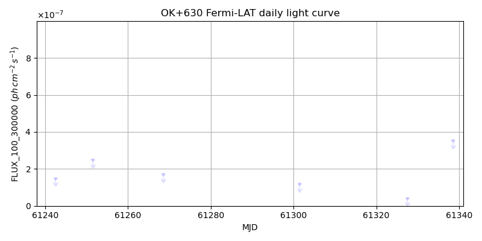
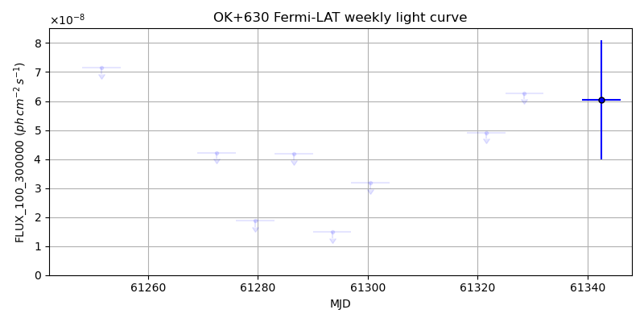
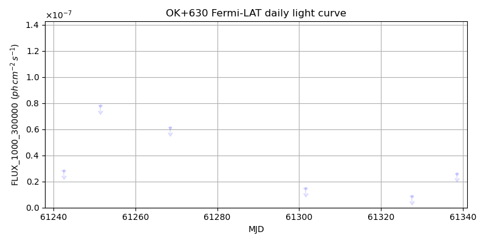
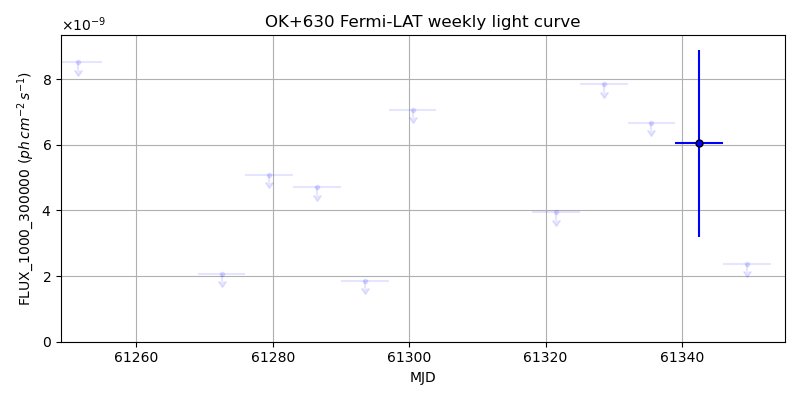

LAT Lightcurve site: https://fermi.gsfc.nasa.gov/ssc/data/access/lat/msl_lc/source/OK_p630
NED: Query
Time of last update of this page: UT: 2026-11-13 16:21 (MJD: 61357.681)
| Property | Value |
|---|---|
| R.A. | 9:21:36.24 |
| Dec. | 62:15:50.4 |
| z | 1.458 |
| 3FGL SpectrumType | |
| 3FGL PL Index | -1.00 |
| 3FGL Flux_100_300000 | -1.00e+00 |
| 3FGL Flux_1000_300000 | -1.00e+00 |
| 3FGL Flux >200 GeV | -1.00e+00 |
| 3FGL Extrap. Crab >200 GeV | -1.00 |
| 3FGL Flux After EBL Absorption >200GeV | -1.00e+00 |
| 3FGL EBL Crab Fraction >200GeV | -1.00 |

| MJD | dMJD | Flux | dFlux | Frac3FGL | FracCrab>200GeV | EBLFracCrab>200GeV |
|---|---|---|---|---|---|---|
| 61254.50 | 0.50 | 2.35e-06 | 0.00e+00 | 0.00 | 0.00 | -0.00 |
| 61268.50 | 0.50 | 1.71e-07 | 0.00e+00 | 0.00 | 0.00 | -0.00 |
| 61301.50 | 0.50 | 1.20e-07 | 0.00e+00 | 0.00 | 0.00 | -0.00 |
| 61327.50 | 0.50 | 4.21e-08 | 0.00e+00 | 0.00 | 0.00 | -0.00 |
| 61338.50 | 0.50 | 3.54e-07 | 0.00e+00 | 0.00 | 0.00 | -0.00 |

| MJD | dMJD | Flux | dFlux | Frac3FGL | FracCrab>200GeV | EBLFracCrab>200GeV |
|---|---|---|---|---|---|---|
| 61321.50 | 3.50 | 4.91e-08 | 0.00e+00 | 0.00 | 0.00 | -0.00 |
| 61328.50 | 3.50 | 6.27e-08 | 0.00e+00 | 0.00 | 0.00 | -0.00 |
| 61335.50 | 3.50 | 1.08e-07 | 0.00e+00 | 0.00 | 0.00 | -0.00 |
| 61342.50 | 3.50 | 6.04e-08 | 0.00e+00 | 0.00 | 0.00 | -0.00 |
| 61349.50 | 3.50 | 2.65e-08 | 0.00e+00 | 0.00 | 0.00 | -0.00 |

| MJD | dMJD | Flux | dFlux | Frac3FGL | FracCrab>200GeV | EBLFracCrab>200GeV |
|---|---|---|---|---|---|---|
| 61254.50 | 0.50 | 1.49e-07 | 0.00e+00 | 0.00 | 0.00 | -0.00 |
| 61268.50 | 0.50 | 6.11e-08 | 0.00e+00 | 0.00 | 0.00 | -0.00 |
| 61301.50 | 0.50 | 1.46e-08 | 0.00e+00 | 0.00 | 0.00 | -0.00 |
| 61327.50 | 0.50 | 8.49e-09 | 0.00e+00 | 0.00 | 0.00 | -0.00 |
| 61338.50 | 0.50 | 2.61e-08 | 0.00e+00 | 0.00 | 0.00 | -0.00 |

| MJD | dMJD | Flux | dFlux | Frac3FGL | FracCrab>200GeV | EBLFracCrab>200GeV |
|---|---|---|---|---|---|---|
| 61321.50 | 3.50 | 3.95e-09 | 0.00e+00 | 0.00 | 0.00 | -0.00 |
| 61328.50 | 3.50 | 7.84e-09 | 0.00e+00 | 0.00 | 0.00 | -0.00 |
| 61335.50 | 3.50 | 6.67e-09 | 0.00e+00 | 0.00 | 0.00 | -0.00 |
| 61342.50 | 3.50 | 6.04e-09 | 0.00e+00 | 0.00 | 0.00 | -0.00 |
| 61349.50 | 3.50 | 2.38e-09 | 0.00e+00 | 0.00 | 0.00 | -0.00 |
--------------------------------------------------------- Using user-supplied coords: 9:21:36.24 62:15:50.4 2000 --------------------------------------------------------- FLWO UT night of: 2026-11-14 Local Sid. @ Midnight: 03:09 Sunset (-15.0) (local, UT): 18:35 01:35 Sunrise (-15.0) (local, UT): 05:42 12:42 Moonrise (local, UT): Moonset (local, UT): 20:50 03:50 Moon phase: 0.22 --------------------------------------------------------- AzTime LSID UT Obj_el Obj_az Mn_el Mn_az Sep. --------------------------------------------------------- 18:35 21:44 01:35 4.1 2.4 20.1 218.2 137.4 19:05 22:14 02:05 4.5 5.9 16.0 223.7 137.4 19:35 22:44 02:35 5.4 9.3 11.6 228.6 137.4 20:05 23:14 03:05 6.6 12.6 6.9 233.2 137.4 20:35 23:44 03:35 8.1 15.8 2.0 237.3 137.4 21:05 00:14 04:05 10.0 18.8 -2.2 241.2 137.4 21:35 00:44 04:35 12.2 21.5 -9.0 244.8 137.4 22:05 01:14 05:05 14.6 24.1 -14.6 248.2 137.4 22:35 01:44 05:35 17.4 26.4 -20.4 251.4 137.4 23:05 02:14 06:05 20.3 28.4 -26.2 254.5 137.5 23:35 02:44 06:35 23.4 30.1 -32.1 257.5 137.5 00:05 03:14 07:05 26.7 31.5 -38.1 260.6 137.5 00:35 03:45 07:35 30.1 32.5 -44.2 263.8 137.5 01:05 04:15 08:05 33.6 33.1 -50.2 267.1 137.6 01:35 04:45 08:35 37.1 33.3 -56.3 270.9 137.6 02:05 05:15 09:05 40.6 32.9 -62.4 275.3 137.7 02:35 05:45 09:35 44.0 32.0 -68.4 281.1 137.7 03:05 06:15 10:05 47.3 30.3 -74.2 289.9 137.8 03:35 06:45 10:35 50.4 27.8 -79.6 306.2 137.9 04:05 07:15 11:05 53.3 24.5 -83.2 343.5 137.9 04:35 07:45 11:35 55.7 20.1 -82.1 35.1 138.0 05:05 08:15 12:05 57.6 14.8 -77.4 61.2 138.1 05:35 08:45 12:35 58.9 8.6 -71.8 73.4 138.1 05:42 08:52 12:42 59.1 7.1 -70.5 75.2 138.1 --------------------------------------------------------- Dark hours >55 deg.: 1.26 srcstart (UT): 2026-11-14 11:25 srcend (UT): 2026-11-14 12:41